Using the Desktop App
Introduction
The ownCloud Desktop App remains in the background and is visible as an icon in the system tray (Windows, KDE), menu bar (macOS), or notification area (Linux).
Icons
Used App Icons
The status indicator uses icons to indicate the current status of your synchronization. The green circle with the white checkmark tells you that your synchronization is current and you are connected to your ownCloud server.
The blue icon with the white semi-circles means synchronization is in progress.
The yellow icon with the parallel lines tells you your synchronization has been paused. (Most likely by you.)
The gray icon with three white dots means your Desktop App has lost its connection with your ownCloud server.

When you see a white circle with the letter "i" that is the informational icon, so you should click it to see what it has to tell you.
The red circle with the white "x" indicates a configuration error, such as an incorrect login or server URL.
The Systray Icon
A right-click on the systray icon opens a menu for quick access to multiple operations.
This menu provides quick access to options like:
-
Your sync accounts,
-
The sync status,
-
Recent Changes, showing the latest activities.
-
and more…
A left-click on your systray icon opens the Desktop App to the account settings window.
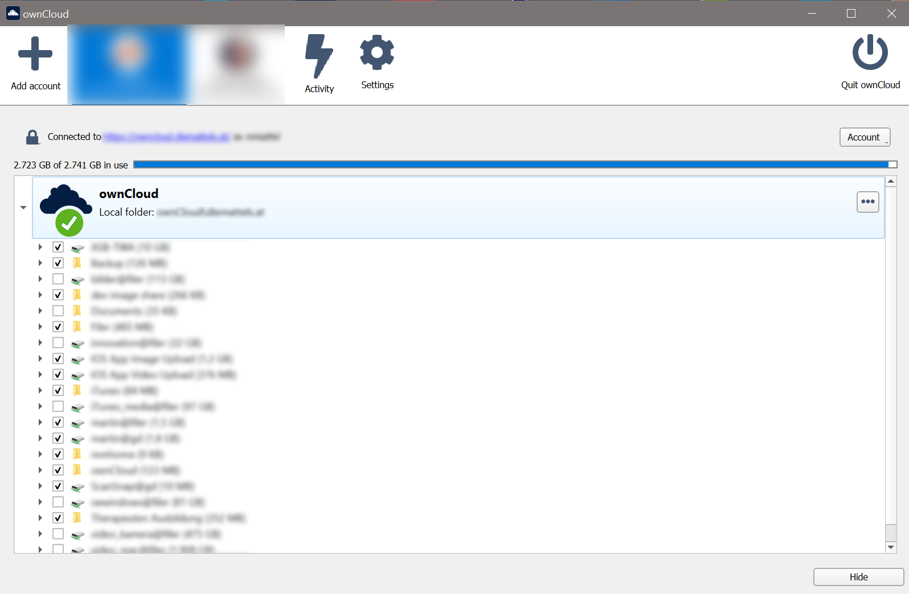
File Manager Overlay Icons
The ownCloud Desktop App provides overlay icons, if not using the VFS feature, in addition to the normal file type icons, for your system file manager (Explorer on Windows, Finder on Mac and Nautilus on Linux) to indicate the sync status of your ownCloud files.
The overlay icons are similar to the systray icons introduced above. They behave differently on files and directories according to sync status and errors.
The overlay icon of an individual file indicates its current sync state. If the file is in sync with the server version, it displays a green checkmark.
If the file is ignored while syncing, for example because it is on your exclude list or because it is a symbolic link, it displays a warning icon.
If there is a sync error, or the file is blacklisted, it displays an eye-catching red X. If the file is waiting to be synced, or is currently being synced, the overlay icon displays a blue cycling icon.
When the Desktop App is offline, no icons are shown to reflect that the folder is currently out of sync and no changes are synced to the server.
The overlay icon of a synced directory indicates the status of the files in the directory. If there are any sync errors, the directory is marked with a warning icon.
If a directory includes ignored files that are marked with warning icons that does not change the status of the parent directory.
Accounts
Connection Wizard
The connection wizard is always shown when the Desktop app has been started and no synchronization connection has been set up so far or when clicking the Add Account button. It takes you step-by-step through configuration options and account setup.
-
First you need to enter the URL of your ownCloud instance:
Note that the URL given to you can be a different one than the final URL used by the Desktop app. This can be the case if a company has a generic setup URL that provides the Desktop app information about where to connect you. This mechanism is called WebFinger and has the big benefit that one only needs to know the generic setup URL. The Desktop app tries to identify if webfinger is provided via the given URL and acts accordingly based on the server’s response. This all runs in the background but is explained here in case you see a different URL being used than entered.
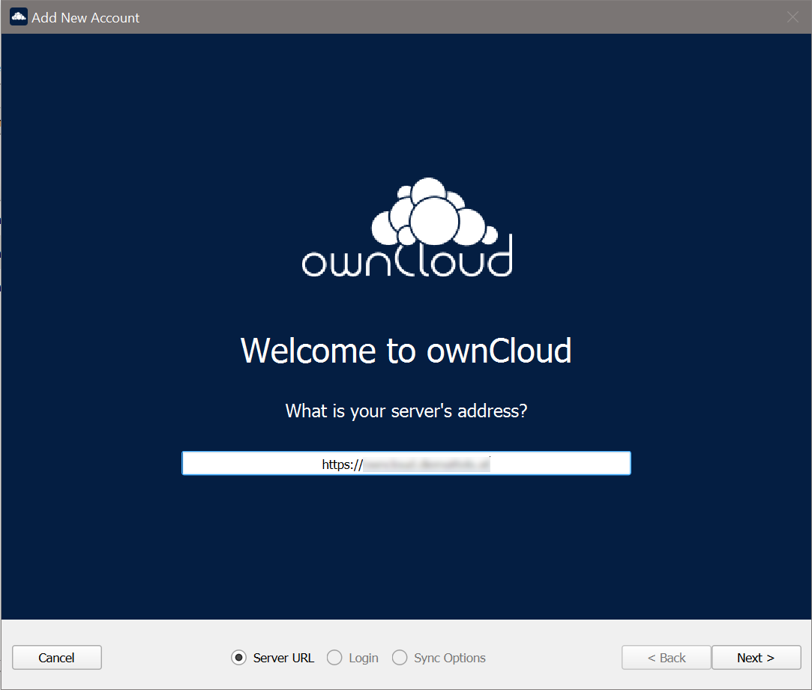
-
Enter your ownCloud login on the next screen. Depending on what the administrator has configured, you may see different login screens. Note that with OAuth 2.0 and with OpenID Connect (OIDC), you will be redirected to a browser for authentication:
To use Two-Factor Authentication (2FA) with the ownCloud Server backend, ownCloud Server must have the OAuth2 app installed, configured and enabled. Please contact your ownCloud administrator for more details.
Login with ownCloud embedded user database
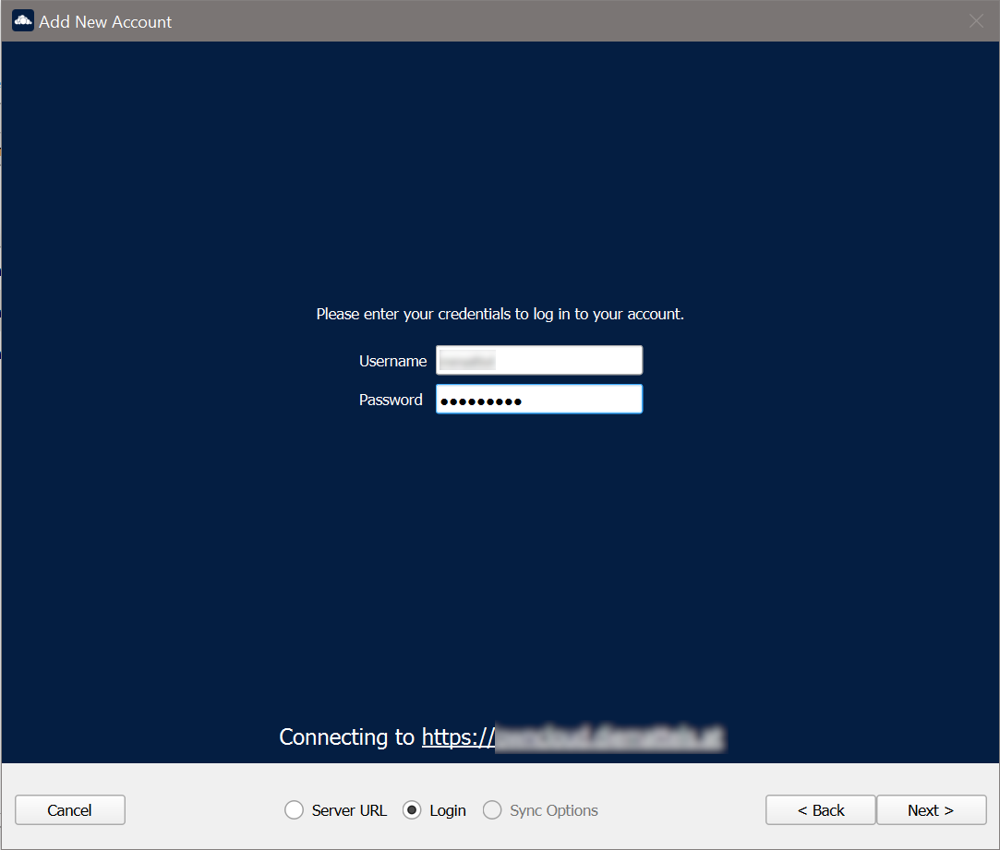
Login with OAuth 2.0 or OIDC
(Follow the web login process)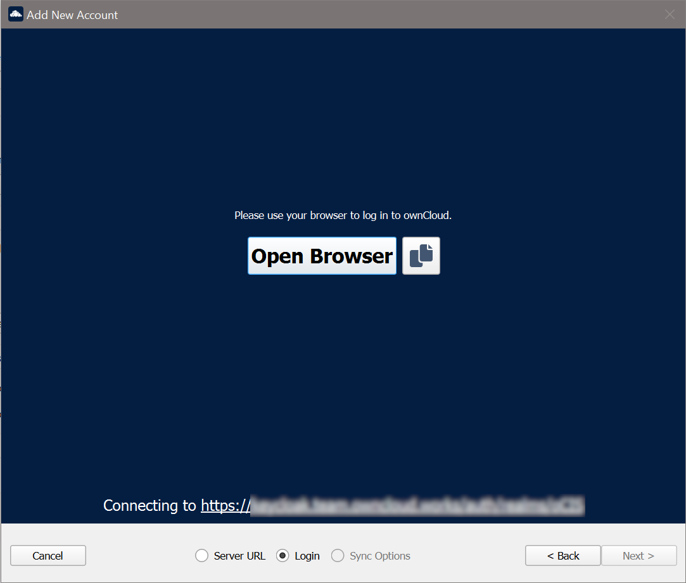
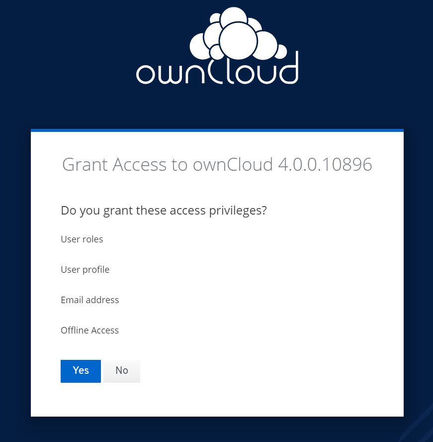
-
Advanced Configuration:
When enabling Advanced configuration, you can refine your synchronization configuration if desired. Here you can define the synchronization method like using the Virtual Filesystem or the location for synchronized data.
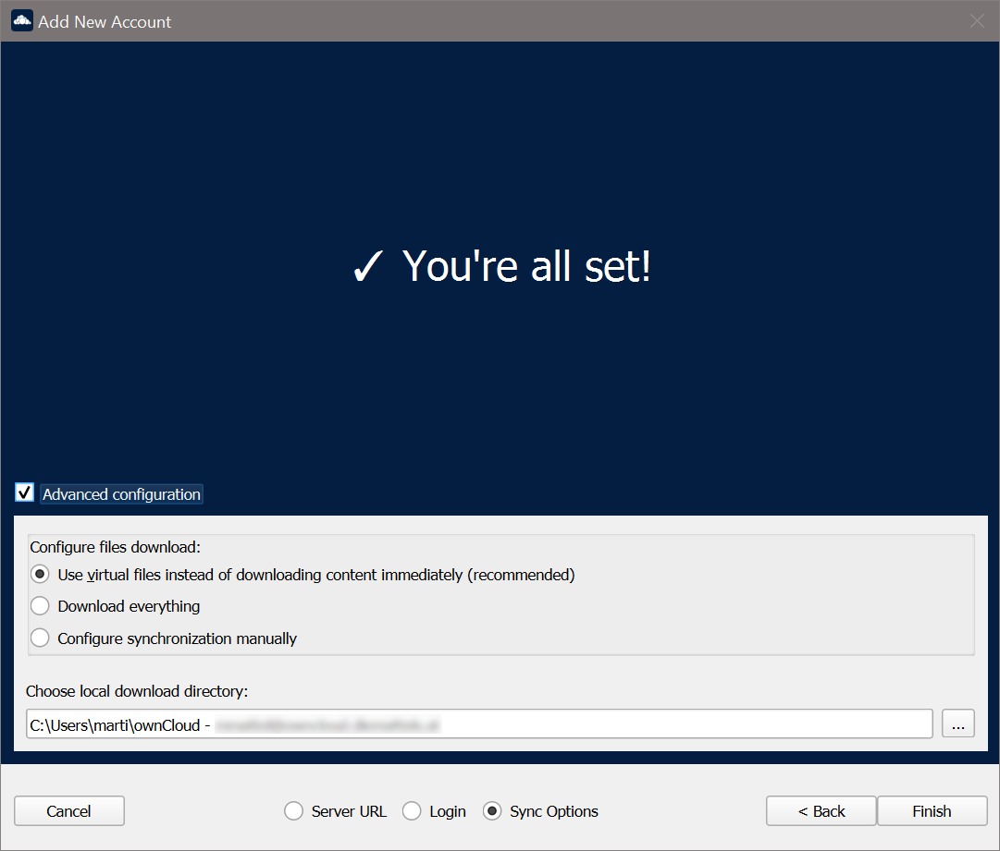
-
Final step:
Once you are satisfied with the configuration made, click the Finish button at the bottom right. The Desktop app will attempt to connect to your ownCloud server and will start synchronizing your files.
Adding New Accounts
You may configure multiple ownCloud accounts in your Desktop app. Simply click the button on the top left and follow the Connection Wizard. The new account will appear as a new item in the main window on top.
Removing an Account
To remove an account, select the account to be removed and click on the button to remove it. Note that the account will be removed but no synchronized data deleted.
Configuring Common Settings
The settings tab contains common settings available and valid for all accounts configured. Here you can define network settings, bandwidth limitations, a confirmation setting to limit folder synchronization size and more.
Configuring Account Settings
At the top of the window are tabs for each configured synchronization account and two more for Activity and Settings. Selecting one account, you have the following features available:
-
Connection status, showing which ownCloud server you are connected to, and your ownCloud username.
-
An Account button, which contains a dropdown menu with Add New, Log Out, and Remove.
-
Used and available space on the server.
-
Current synchronization status.
-
Add Folder Sync Connection button.
The little button with three dots (the overflow menu) that sits to the right of the sync status bar offers four additional options:
- Show in Explorer
-
Opens your local ownCloud sync folder.
- Show in web browser
-
Opens your ownCloud via the browser.
- Choose What to Sync
-
Select the folders and mounts in the main window to be synced. This appears only when your file tree is collapsed, and expands the file tree.
- Force sync now / Restart sync
-
Start the sync process immediately - if none is running, or restart a running sync process.
- Pause Sync
-
Pauses sync operations without making any changes to your account. It will continue to update file and folder lists, without downloading or updating files.
- Remove Folder Sync Connection
-
Stop all sync activity.
- Enable virtual file support
-
Enable the virtual file support for an account:

Account Reconnecting
Synchronization happens on a regular basis and connects to the server every few minutes. A connection loss can occur when the network cable is unplugged or when switching to a different wireless network. In such a case a manual force reconnect button becomes available in case you want to immediately restart syncing for an account and not wait for an automatic reconnect. This button only becomes available if the Desktop app is in reconnection state.
To manually force reconnecting for an account, select the account and click .
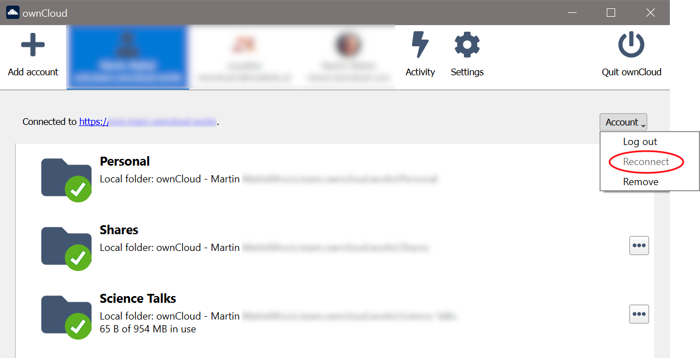
Force Syncing a Folder
If there is data to be synced immediately, like when you are on the road and need to continue working offline, you can force syncing a folder of an account before the network connection goes offline. To do so, select the account and then the folder to force sync and the button.
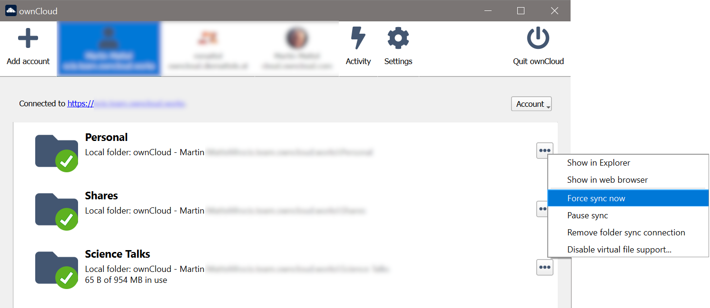
Spaces
Spaces are only available when connected to an Infinite Scale backend. In most cases, they are similar to folders or external mounts when the backend is ownCloud Server and one might not see differences, though some exist:
-
On initial account setup, all available spaces are auto-selected for the synchronization process.
-
There are at minimum two spaces added, which are the personal space and the space that contains all received shares. Shares are shown as folders in the local filesystem.
-
-
Post initial account setup, new spaces can be added via Managing Resources to Synchronize.
-
When a space is renamed in the Web UI, it also gets renamed in the sync window view, but the local folder name where it is stored does not change.
-
Spaces can be customized with images in the Web UI. The image selected is also shown in the Desktop app.
-
When a space gets disabled or deleted via the Web UI, no data is deleted locally.
-
If you have used ownCloud Infinite Scale with a Desktop app version older then 3.0, you must remove the account from the Desktop app and do an initial account setup again to work with spaces.
Managing Resources to Synchronize
When an account gets added the first time, you can select which remote resources you want to synchronize. This includes the syncronization type which defaults to VFS if available on your operating system (OS) or selective sync where you manually select the resoures to be synchronized otherwise. These resources are represented by the Desktop app as local folders using the base path defined during account setup. Depending on the backend connected, resources shown can be the full external mount or a folder inside an external mount when using ownCloud Server, or spaces when using Infinite Scale.
If VFS is available for your OS but selective sync has been chosen, you can at any time switch to VFS and vice versa. Note to check the available disk space before switching from VFS to selective sync (Disable Virtual File support).
The base path defined on first sync is not the only path that can be used. Resources can have their individual base path. This is can be beneficial if you want selected resources to be located on different paths than the default.
Using an Account That Connects To ownCloud Server:
When VFS has been enabled on initial account setup, all new resources from the server will be added automatically but do not require additional space.
In case selective sync has been chosen, different options are available to add resources.
-
You will see a list of available remote resources you can manage as shown in the screenshot below. If a new resource gets added on the server like via the Web UI, it will be listed here.
-
To add a resource to be synced as folder to the same base path, set the check mark. To remove a resource from syncing, deselect it. To finalize the selection, click the Apply button on the bottom right.
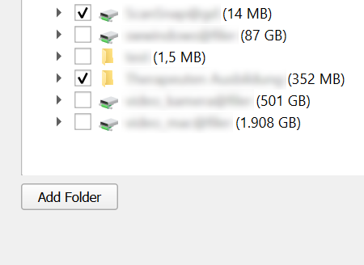
-
To add a resource to be synced as folder to a different path than the account base path, click in the bottom left corner on Add Folder. Select the path and the resources to sync and complete the process.
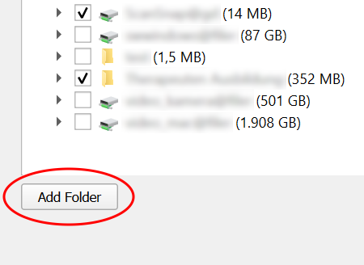
-
Using an Account That Connects To Infinite Scale:
When an account connects to Infinite Scale, the list of currently synced spaces looks like the image below. It also shows the state of the synchronization process:
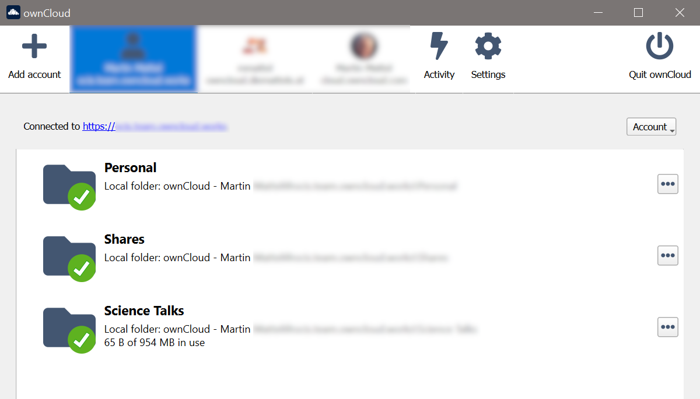
When a new space gets added via the Web UI, it will not be automatically listed here as this window only shows spaces that are already synchronized.
To add a new space for synchronization, click the Add Space button, select the space and define the path if you do not want to take the default base location. Finalize with Add Sync Connection:
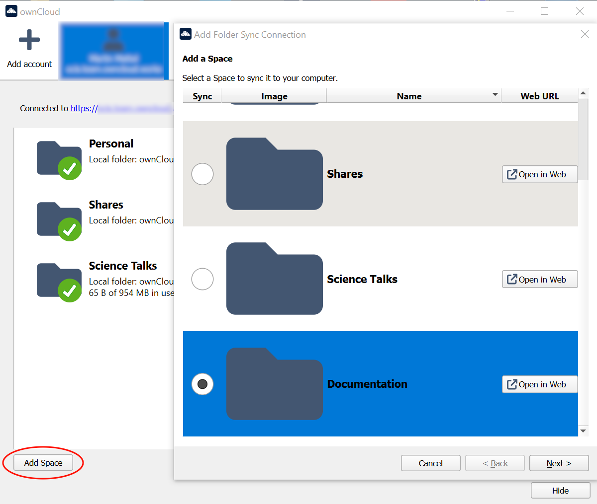
Sharing From Your Desktop
The ownCloud Desktop App integrates with your file manager:
-
Explorer on Windows,
-
Finder on macOS,
-
and Nautilus on Linux.
(Linux users must install theowncloud-client-nautilusplugin.)
You can share with internal ownCloud users and groups and create links to share with external users.
-
If you are not already at the location of the file or folder to share, right-click your systray icon, hover over the account you want to use, and left-click to quickly enter your local ownCloud folder.
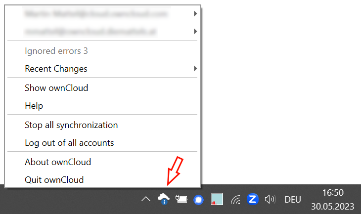
-
Go to the file or folder you want to share.
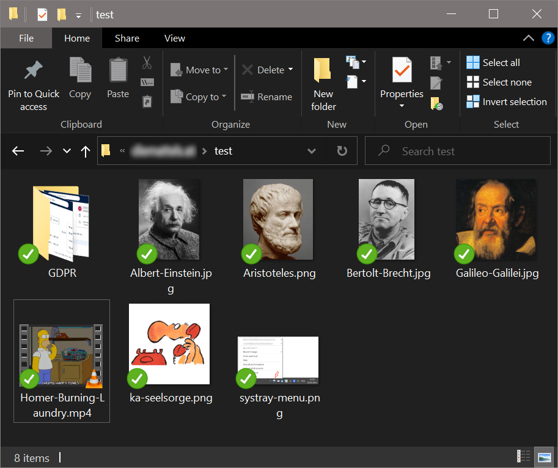
-
Right-click the file or folder you want to share to expose the share dialog which opens the context menu, and click .

-
Depending on the backend used, different things can happen:
-
ownCloud Infinite Scale
The default browser opens and shows the share dialog of ownCloud Web to take the required settings. If you are not logged in, you will be asked to do so first.
-
ownCloud Server
The share dialog opens which has all the same options as your ownCloud Server Web interface.
Sharing with users and groups Public sharing 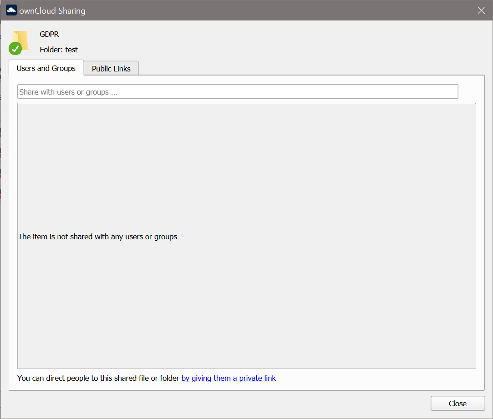
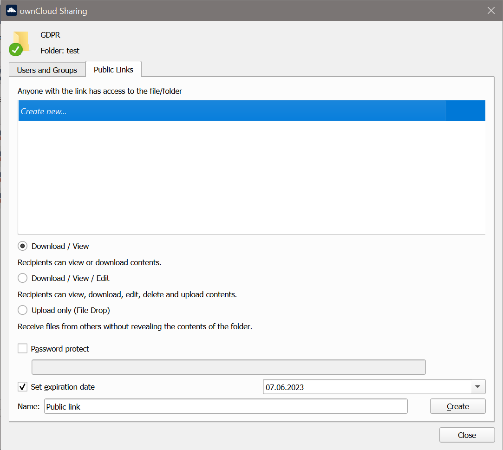
Use from the context menu to see who you have shared with and to modify their permissions or to delete the share.
-
Activity Window
The Activity window contains the log of your recent activities, organized over three tabs:
- Server Activities
-
Includes new shares and files downloaded and deleted.
- Sync Protocol
-
Displays local activities such as which local folders your files went into.
- Not Synced
-
Shows errors such as files not synced because of being excluded or any other failing status.
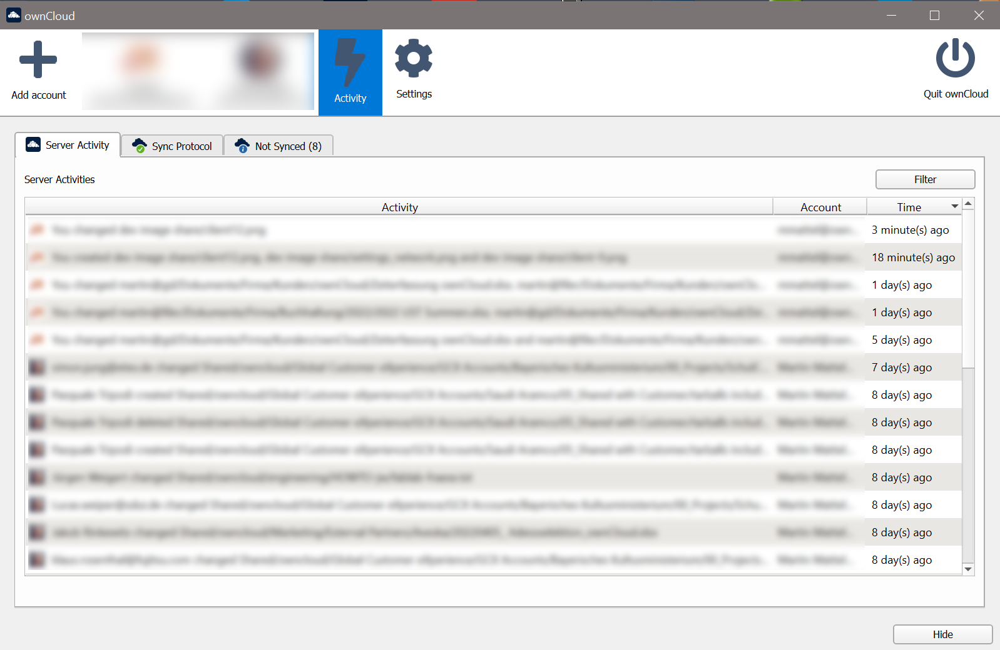
In Windows, double-clicking an activity entry pointing to an existing file in tabs Server Activities or Sync Protocol, will open the folder containing the file and highlight it.
On Linux, you can do the same with
In any of the activity tabs you can mark a single line, multiple lines or all lines with CTRL+a and copy the selected lines to the clipboard with .
Server Notifications
The desktop client will display notifications from your ownCloud server that require manual interaction. It automatically checks for available notifications automatically on a regular basis. Notifications are displayed in the Server Activity tab. If you have enabled you’ll also see a systray notification.
For example, when a user on a remote ownCloud creates a new Federated share for you, you can accept it from your desktop client. This also displays notifications sent to users by the ownCloud admin via the Announcements app.
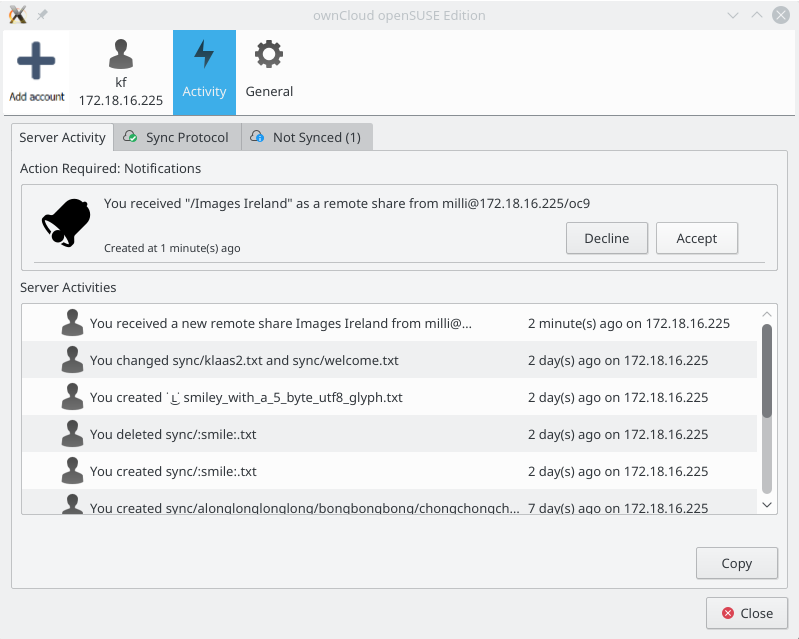
Settings Window
The Settings Window has configuration options such as:
Advanced
-
Show sync folders in Explorer’s Navigation Pane
-
Sync hidden files
Hidden files are files starting with a dot like .filename.txt, but not files which are hidden by setting a file attribute. -
Show crash reporter and the
-
Buttons for Edit Ignored Files (see below) and Log settings
Advanced - Approval Synchronizing Folders
This is only valid if not using the VFS feature.
-
Ask confirmation before downloading folders larger than [folder size]
-
Ask for confirmation before synchronizing external storages
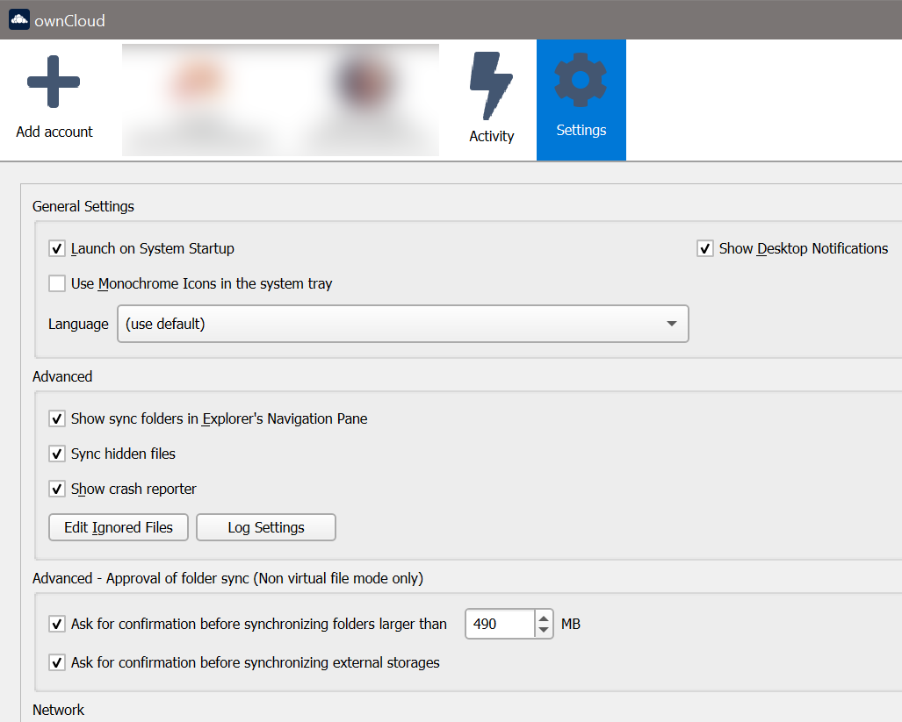
| While you can select whether to show or hide the crash reporter, from the Settings Window, you can also configure whether to show or hide it from the general section of the configuration file as well. Doing so can help with debugging on-startup-crashes. |
Using the Network Window
The Network settings window enables you to define network proxy settings and defines limits to the download and upload bandwidth.
- Proxy Settings
-
-
No proxy
-
Use system proxy
-
Specify proxy manually as
-
HTTP(S)
-
SOCKS5
-
-
- Download and Upload Bandwidth
-
The following options are available:
-
No limit
-
Limit automatically
When activated, the client limits the upload or download bandwidth to 25% of the currently available bandwidth for each operation. The available bandwidth is measured on the fly at the beginning of every operation for a very short period of time. -
Limit to
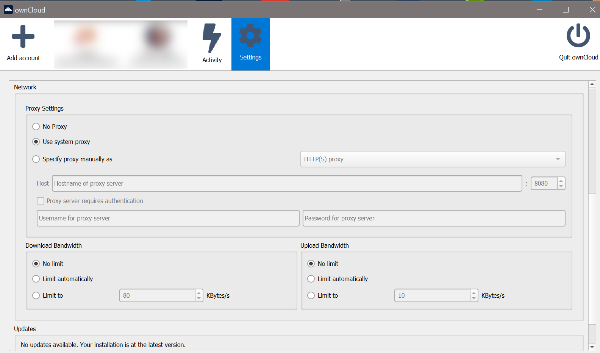
-
|
Enabling this feature will affect all new transfers (next upload chunk or next download), but not affect already running transfers (current upload chunk or current download). Changing this setting or disabling this feature with take effect immediately. |
Using the Ignored Files Editor
You might have some local files or directories that you do not want to backup and store on the server. To identify and exclude these files or directories, you can use the .
|
Note that rules for ignored files are also applied to folders. 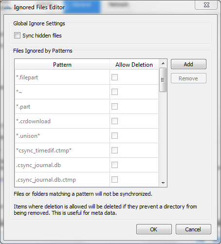 |
For your convenience, the editor is pre-populated with a default list of typical ignore patterns. These patterns are contained in a system file. (typically sync-exclude.lst) located in the ownCloud Desktop app directory. You cannot modify these pre-populated patterns directly from the editor. However, if necessary, you can hover over any pattern in the list to show the path and filename associated with that pattern, locate the file, and edit the sync-exclude.lst file.
| Modifying the global exclude definition file might render the client unusable or result in undesired behavior. |
Each line in the editor contains an ignore pattern string. When creating custom patterns, in addition to being able to use normal characters to define an ignore pattern, you can use wildcards characters for matching values. As an example, you can use an asterisk (*) to identify an arbitrary number of characters or a question mark (?) to identify a single character.
Patterns that end with a slash character (/) are applied to only directory components of the path being checked.
| Custom entries are currently not validated for syntactical correctness by the editor, so you will not see any warnings for bad syntax. If your synchronization does not work as you expected, check your syntax. |
| A restart of the client is needed in order for the changes to take effect. |
Each pattern string in the list is preceded by a checkbox. When the checkbox contains a check mark, in addition to ignoring the file or directory component matched by the pattern, any matched files are also deemed "fleeting metadata" and removed by the client.
In addition to excluding files and directories that use patterns defined in this list:
-
The ownCloud Client always excludes files containing characters that cannot be synchronized to other file systems.
-
Files are removed that cause individual errors three times during a synchronization. However, the client provides the option of retrying a synchronization three additional times on files that produce errors.
For more detailed information see the Ignored Files section.
Removing a Sync Connection
When removing a synchronization connection, all synchronized data will stay locally and not get deleted. To remove a sync relationship, change to the account and select the synchronization relationship that should get removed. When clicking the … (three dots) icon, the following window appears:
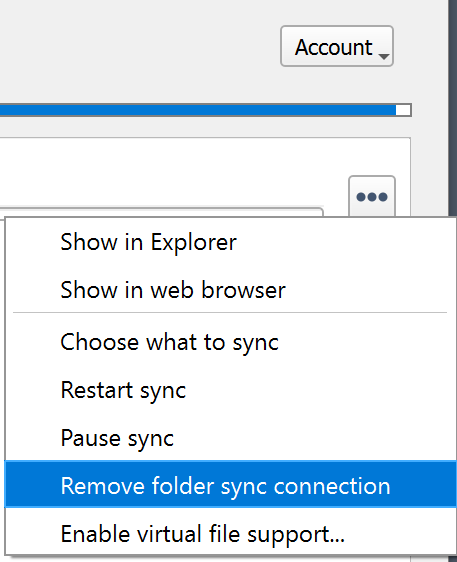
Select Remove folder sync connection to remove it. If you also want to delete the related data, go to the folder and delete it.
| Before removing the connection, click Show in Explorer. This will open the source folder where all the synced data is located. This eases deleting this folder as you do not need to search for it after removing the sync connection. |